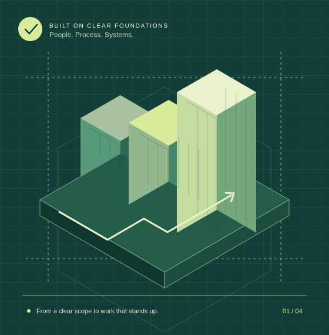

SECURITY. PRIVACY. COMPLIANCE.
Security standards.
Put into
practice.
Clear plans. Hands-on implementation. Evidence you can stand behind. We help turn your organisation’s requirements into the way it actually works.
Based in the United Kingdom.
Working with organisations worldwide.

THE WORK BEHIND THE ASSURANCE.PRACTICAL BY DESIGN
01 — WHY CIASECURED
Good intentions need
good implementation.
Policies and plans are a starting point. The real work is assigning responsibility, changing processes, implementing controls and checking that the result holds up.
CIASecured is a UK-based implementation company working with organisations internationally. We bring those pieces together, with your team involved from the first conversation to the final handover.
OUR SERVICES
From the first question
to the finished work.
Support where you need it.
A connected plan when you need more.
BUILT AROUND YOUR REQUIREMENTS
Your standard.
Your context.
A practical plan.
Start with the requirements that matter to your organisation. We agree the scope, identify the work and make the responsibilities clear.
An information security
management system that works.
Connect the scope, risks, controls and ownership to the way your organisation operates.
Understand the contextScope, stakeholders and responsibilities
✓Plan the implementationPrioritised actions with named owners
✓Check the supporting evidenceReviews, decisions and outstanding work
✓WHAT WE WORK THROUGH
- Agreed scope and responsibilities
- Risk and control implementation plan
- Policies and practical procedures
- Evidence review and handover
HOW THE WORK GETS DONE
A clear path.
People at every step.
Agreed together. Delivered with ownership.
Reviewed before it is handed over.
We start with your organisation, the reason for the project and the requirements you need to meet. Together, we agree what is in scope and what a useful outcome looks like.
A WORKING RELATIONSHIP
We stay close
to the work.
You should know what is happening, who is responsible and what needs your decision. Our approach keeps delivery work and client involvement connected.
- 01
Clear ownership
Agreed responsibilities for your team and ours.
- 02
Visible progress
Tasks, evidence and decisions in context.
- 03
A considered handover
Documentation your people can understand and use.
BEFORE WE BEGIN
A few useful
answers.
Where does an engagement start?
With a conversation about your organisation, your requirements and the work you need help with. The scope, responsibilities and commercial terms are agreed before delivery begins.
Can you support an existing programme?
That is a useful starting point for discovery. We can discuss the work already completed, the remaining gaps and where implementation support would be most useful.
How will our team be involved?
Client responsibilities, decisions and review points form part of the agreed plan. The aim is to leave your organisation with work it can own and continue.
Is certification included?
Implementation and preparation are scoped with you. Independent assessment, certification arrangements and any external fees are agreed separately; this website does not promise a certification outcome.
LET’S GET THE SCOPE RIGHT
What needs to
work better?
Tell us where you are and what you need to achieve.
We’ll start with a useful conversation.